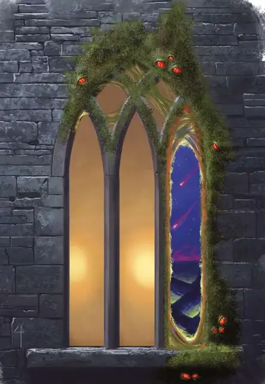

Алкилит
Alkilith
Среднее Исчадие (Демон), обычно хаотично-злое

Класс Доспеха 17 (природный доспех)
Хиты 168 (16к8 + 96)
Скорость 40 футов, лазая 40 футов
| мод | спас | ||
|---|---|---|---|
| СИЛ | 12 | +1 | +1 |
| ЛОВ | 19 | +4 | +8 |
| ТЕЛ | 22 | +6 | +10 |
| мод | спас | ||
|---|---|---|---|
| ИНТ | 6 | −2 | −2 |
| МДР | 11 | +0 | +0 |
| ХАР | 7 | −2 | −2 |
Навыки Скрытность +8
Сопротивление урону кислота, огонь, холод, электричество; дробящий, колющий, рубящий от немагических атак
Иммунитет к урону яд
Иммунитет к состояниям отравление, очарование, испуг
Чувства тёмное зрение 120 футов, пассивное Восприятие 10
Языки понимает язык Бездны, но не говорит на нём
Опасность 11 (7200 опыта)
Бонус мастерства +4
Среда обитания Город, Подземье
Особенности
Разрыв Бездны. Если алкилит находится в дверном проёме, окне или подобное отверстие непрерывно в течение 6к6 дней, то отверстие становится постоянным порталом на случайный слой Бездны.
Аморфный. Алкилит может перемещаться сквозь пространство шириной до 1 дюйма без протискивания.
Обманчивая внешность. Если алкилит неподвижен в начале боя, он имеет преимущество в броске инициативы. Более того, если существо не наблюдало за движением или действием алкилита, это существо должно преуспеть в проверке Интеллекта (Расследование) Сл 18, чтобы определить, что алкилит не является обыкновенной слизью или грибком.
Порождение смятения. Любое отличное от демона существо, начинающее свой ход в пределах 30 футов от алкилита должно преуспеть в спасброске Мудрости Сл 18, иначе начнёт слышать слабое жужжание у себя в голове, получая помеху на свой следующий спасбросок, бросок атаки или проверку характеристики. В случае, если спасбросок провален на 5 и более, существо становится целью для заклинания смятение [confusion] на 1 минуту (компоненты не требуются). Пока существо находится под действием заклинания смятение [confusion], оно обладает иммунитетом к «Порождению смятения».
Сопротивление магии. Алкилит совершает с преимуществом спасброски от заклинаний и прочих магических эффектов.
Паучье лазанье. Алкилит может лазать по сложным поверхностям, включая потолки, без совершения проверок характеристик.
Необычная природа. Алкилит не нуждается в воздухе, питье, еде и сне.
Действия
Мультиатака. Алкилит совершает три атаки Щупальцем.
Щупальце. Рукопашная атака оружием: +8 к атаке, досягаемость 15 футов, одна цель. Попадание: 18 (4к6 + 4) урона кислотой.
Описание
Алкилит легко ошибочно принимается за какой-то грязный грибковый нарост, появляющийся на дверях, окнах и других проёмах. Это свисающая мерзость скрывает демоническую природу алкилитов, делая из того, что кажется очень странным что-то безобидное. Везде, где укореняются алкилиты, они ослабляют ткань реальности, создавая портал, через который могут проникать ещё более отвратительные демоны.
Появление алкилита в мире свидетельствует о большой ошибке и неизбежной катастрофе. Алкилит ищет отверстие, такое как окно или дверь, вокруг которой он может укорениться, растягивая своё тело вокруг отверстия и фиксируя себя липкой секрецией. Если его не беспокоить, отверстие будет настроено на Бездну и в конечном итоге станет порталом к этому плану (см. «Планарные порталы» во 2 главе "Руководства Мастера", стр. 45).
Алкилиты происходят из отброшенных кусочков отвратительного, содрогающегося тела Джубилекса, а затем постепенно обретают сознание и ищут путь на Материальный План. Поскольку большинство культистов считают их слишком опасными для призыва (ведь, в конце концов, они могут создать порталы в Бездну), алкилиты должны найти другие пути покинуть свой родной план.